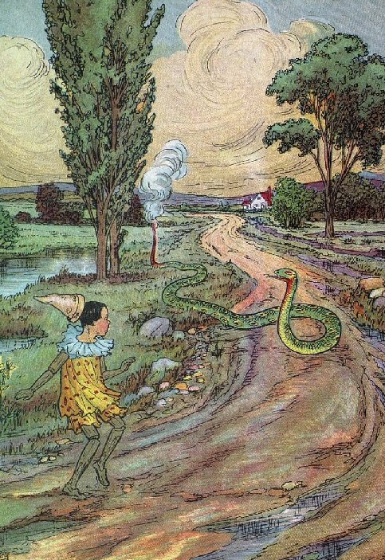

Friday, March the 28th, 2008
back to: title, date or indexes

Intriguingly, the serpent is belching fire not through its mouth but from its fundament. This is more common than you might think. Often, when I roam the lanes of my bailiwick, I come upon similar scenes of wooden tinies being menaced by fiery serpents, and in a significant number of cases serpentine fundament-fire is seen to occur. For the serpent, the advantage of this is that when a public-spirited figure such as myself chances upon it and extinguishes the flames with a handy portable fire extinguisher, it does not gag or choke on the jet of exciting fire-suppressant foam, as invariably happens with mouth-sourced serpentine flames, but merely shrugs it off, inasmuch as a serpent can shrug, and slithers off on its merry way down the lane. Unfortunately, I have to say that the skittish wooden tinies whose imperilment I so selflessly avert tend to be an ungrateful lot, and it is rare indeed that I am even thanked, let alone given a reward. Nevertheless, I shall not stint in my roamings, along the winding lanes of my bailiwick, armed with my fire extinguisher.
Note the disposition of the trees.
The picture appears in Monster Brains, to which the reader is referred.